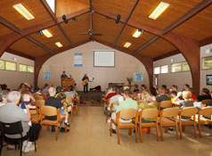

|
|
We meet at 10:00 AM on the 1st and 3rd Sundays of each month for a lay-led service at 8639 Columbia Road in Maineville. Our building is located on the campus of Lakeview United Church of Christ. Harmony's building is on the left and Lakeview's building is on the right as you are walking from the shared parking lot. Click here for map and directions > Since Harmony is a lay-led church, every service offers a unique experience. Our one-hour services typically include a thought-provoking message, small group discussions, acoustic guitar music, and coffee. We pride ourselves on offering a relaxed, family-friendly atmosphere. While our topics change each week, some things at Harmony always stay the same. Each service begins with a UU tradition, the lighting of the chalice. We also invite our children to share their joys and sorrows with the group before they head off to their Religious Exploration classes. After that, adults also share their joys and sorrows before diving in to the week's topic. Visitors are welcome and encouraged to participate in our Sunday services. Our Religious Exploration (RE) program is designed for children ages three and older who are accustomed to a class experience (school, library story time, etc.). There are classes for preschoolers and kindergarteners, first and second graders, and third through fifth graders. Older students attend class once per month and also attend our services, having their own age-appropriate discussion groups led by an adult moderator. Childcare is provided for children who are not yet ready to participate in RE. We invite you to visit one of our upcoming services:
|

Check out some of our past sermons and questions for discussion here: "My Time at Harmony" (Video) "How a Christian left a Church, an Atheist went to Church and Everything Worked out in the End." "Why Do We Hate Ourselves?" "Religion in Pop Culture" "Meditation" |